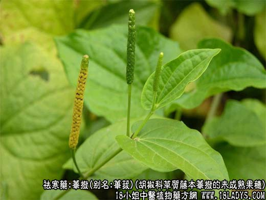
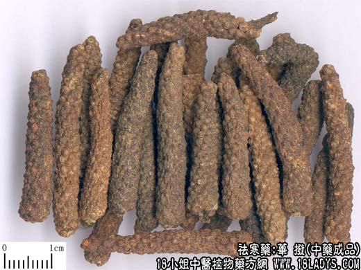

荜拨为较常用中药。始载宋《开宝本草》，原名荜菝。
来源：为胡椒科多年生草质藤本植物荜拨的未成熟果穗。
产地：印尼、越南、我我国云南亦有产。
性状鉴别：果穗呈圆柱状，有时稍弯曲，长约2~5厘米，直径5~8毫米，少数带有1~2厘米长的果柄。外表面黄棕色或深棕色，由多数细小的瘦果聚集而成，排列紧密整齐形成交错的小突起，小瘦果略呈圆球形，直径约1毫米，质坚脆，断面稍发红或带白点。清香，味辛辣。
以身干肥发色黑味浓者为佳。
主要成分：含胡椒碱，另含挥发油。
功效与作用：祛风、散寒、镇痛、消肿。
性味：辛、大温。
归经：入胃、大肠经。
功能：温中散寒。止痛。
主治：脘腹冷痛，呕吐酸水，鼻渊牙痛。
临床应用：用于胃寒呕吐及腹痛、荜拨和姜、厚朴配伍，可治疗胃寒吐涎、吐酸水及心腹冷痛等，与细辛、檀香、延胡索、高良姜、当归配伍，可治疗心绞痛。
用量：1.5~3g。
处方举例：荜拨3g、雄黄1g、冰片1g、共为细粉，用少许敷在痛苦牙上可治疗牙疼。
注：1、含胡椒硷4%~6%，挥发油1%。
2、过去进口荜拨有两种：①泗水荜拨，主产于印尼的泗水。表面棕褐色，条顺直。谷粒状小突起物紧密，香气浓。质佳。
②安南荜拨，主产于越南。表面棕红色，条弯曲，谷粒状小突起物疏松，香味淡，质次。
云南产的荜拨，性状气味与泗水荜拨相似。品质较佳。